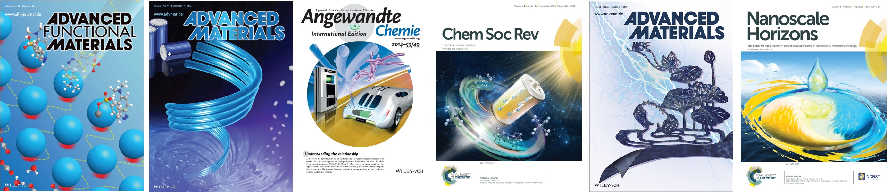

Featured Journal Covers

Journal Publications
We welcome your comments and suggestions on our work, and please send your request to Prof. Tang via tang0212@ntu.edu.sg, if you need a copy of the following publications. (Remark: * Corresponding author, + Co-first author)
2018
80. Tang, Y.; Zhang, Y.; Malyi, O. I.; Bucher, N.; Xia, H.; Xi, S.; Zhu, Z.; Lv, Z.; Li, W.; Wei, J.; Srinivasan, M.; Borgna, A.; Antonietti, M.; Du, Y.*; Chen, X.*, Identifying the Origin and Contribution of Surface Storage in TiO2(B) Nanotube Electrode by In Situ Dynamic Valence State Monitoring. Adv. Mater. 2018, 30, 1802200.
79. Wu, X.; Tang, Y.; Silberschmidt, V. V.; Wilson, P.; Chen, Z.*, Mechanically Robust Transparent Anti-Icing Coatings: Roles of Dispersion Status of Titanate Nanotubes. Adv. Mater. Interfaces, 2018, 1800773.
78. Zhu, Z.; Tang, Y.; Lv, Z.; Wei, J.; Zhang, Y.; Wang, R.; Zhang, W.; Xia, H.; Ge, M.; Chen, X.*, Fluoroethylene Carbonate Enabling a Robust LiF-rich Solid Electrolyte Interphase to Enhance the Stability of the MoS2 Anode for Lithium-Ion Storage. Angew. Chem. Int. Ed. 2018, 57 (14), 3656-3660.
77. Ge, M.; Cao, C.; Huang, J.; Zhang, X.; Tang, Y.*; Zhou, X.; Zhang, K.; Chen, Z.*; Lai, Y.*, Rational design of materials interface at nanoscale towards intelligent oil–water separation. Nanoscale Horiz. 2018, 3 (3), 235-260.
76. Lv, Z.; Luo, Y.; Tang, Y.; Wei, J.; Zhu, Z.; Zhou, X.; Li, W.; Zeng, Y.; Zhang, W.; Zhang, Y.; Qi, D.; Pan, S.; Loh, X. J.; Chen, X.*, Editable Supercapacitors with Customizable Stretchability Based on Mechanically Strengthened Ultralong MnO2 Nanowire Composites. Adv. Mater. 2018, 30, 1704531.
2017
75. Tang, Y.; Deng, J.; Li, W.; Malyi, O. I.; Zhang, Y.; Zhou, X.; Pan, S.; Wei, J.; Cai, Y.; Chen, Z.; Chen, X.*, Water-Soluble Sericin Protein Enabling Stable Solid-Electrolyte Interphase for Fast Charging High Voltage Battery Electrode. Adv. Mater. 2017, 29, 1701828.
74. Zhang, Y.; Malyi, O. I.; Tang, Y.; Wei, J.; Zhu, Z.; Xia, H.; Li, W.; Guo, J.; Zhou, X.; Chen, Z.; Persson, C.; Chen, X.*, Reducing the Charge Carrier Transport Barrier in Functionally Layer-Graded Electrodes. Angew. Chem. Int. Ed. 2017, 56 (47), 14847-14852.
73. Mao, J.; Ge, M.; Huang, J.; Lai, Y.*; Lin, C.; Zhang, K.; Meng, K.*; Tang, Y.*; , Constructing multifunctional MOF@rGO hydro-/aerogels by the self-assembly process for customized water remediation. J. Mater. Chem. A 2017, 5 (23), 11873-11881.
72. Zhang, S.; Huang, J.; Tang, Y.; Li, S.; Ge, M.; Chen, Z.; Zhang, K.; Lai, Y., Understanding the Role of Dynamic Wettability for Condensate Microdrop Self-Propelling Based on Designed Superhydrophobic TiO2 Nanostructures. Small 2017, 13 (4), 1600687.
71. Tan, X.; Zhou, H.*; Tang, Y.; Zhou, D.; Kanhere, P.; Tay, Q.; Chen, X., Li4x/3Co2−2xTi1+2x/3O4 spinel solid solutions: order and disorder phase transition, cations distribution and adjustable microwave dielectric properties. RSC Adv. 2017, 7 (81), 51670-51677.
70. Chen, S.; Tao, J.*; Shu, H.; Tao, H.; Tang, Y.; Shen, Y.; Wang, T; Pan, L.; Efficient electron transfer kuramite Cu3SnS4 nanosheet thin film towards platinum-free cathode in dye-sensitized solar cells. J. Power Sources 2017, 341, 60–67.
2016
69. Tang, Y.; Zhang, Y.; Rui, X.; Qi, D.; Luo, Y.; Leow, W. R.; Chen, S.; Guo, J.; Wei, J.; Li, W.; Deng, J.; Lai, Y.; Ma, B.; Chen, X.*, Conductive Inks Based on a Lithium Titanate Nanotube Gel for High-Rate Lithium-Ion Batteries with Customized Configuration. Adv. Mater. 2016, 29, 1701828.
68. Rui, X.+; Tang, Y.+; Malyi, O. I.+; Gusak, A.; Zhang, Y.; Niu, Z.; Tan, H. T.; Persson, C.; Chen, X.; Chen, Z.*, Ambient dissolution-recrystallization towards large-scale preparation of V2O5 nanobelts for high-energy battery applications. Nano Energy 2016, 22, 583–593.
67. Zhang, Y.+; Wu, B.+; Tang, Y.+; Qi, D.; Wang, N.; Wang, X.; Ma, X.; Sum, T. C.; Chen, X.*, Prolonged Electron Lifetime in Ordered TiO2 Mesophyll Cell‐Like Microspheres for Efficient Photocatalytic Water Reduction and Oxidation. Small 2016, 12 (17), 2291-2299.
66. Zhang, Y.; Tang, Y.; Li, W.; Chen, X.*, Nanostructured TiO2-based Anode Materials for High-performance Rechargeable Lithium-ion Batteries. ChemNanoMat 2016, 2, 764.
65. Zhang, Y.+; Rui, X.+; Tang, Y.+; Liu, Y.; Wei, J.; Chen, S.; Leow, W. R.; Li, W.; Liu, Y.; Deng, J.; Ma, B.; Yan, Q.*; Chen, X.*, Wet-Chemical Processing of Phosphorus Composite Nanosheets for High-Rate and High-Capacity Lithium-ion Batteries. Adv. Energy Mater. 2016, 6, 1502409.
64. Ma, X.; Tang, Y.; Tao, H.; Lai, Y.; Zhang, Y.*; Zhou, X.; Lv, Z.; Zhu, Z.; Tao, J.*, Uniform spatial distribution of a nanostructured Ag/AgCl plasmonic photocatalyst and its segregative membrane towards visible light-driven photodegradation. CrystEngComm 2016, 18 (20), 3725-3733.
63. Li, Y.; Wei, X.; Zhu, B.; Wang, H.; Tang, Y.; Sum, T. C.; Chen, X.*, Hierarchically branched Fe2O3@TiO2 nanorod arrays for photoelectrochemical water splitting: facile synthesis and enhanced photoelectrochemical performance. Nanoscale 2016, 8 (21), 11284-11290.
62. Ge, M.-Z.; Cao, C.-Y.; Li, S.-H.; Tang, Y.-X.; Wang, L.-N.; Qi, N.; Huang, J.-Y.; Zhang, K.-Q.; Al-Deyab, S.; Lai, Y.-K., In situ plasmonic Ag nanoparticle anchored TiO2 nanotube arrays as visible-light-driven photocatalysts for enhanced water splitting. Nanoscale 2016, 8 (9), 5226-5234.
2015
61. Tang, Y.; Zhang, Y.; Li, W.; Ma, B.; Chen, X.*, Rational material design for ultrafast rechargeable lithium-ion batteries. Chem. Soc. Rev. 2015, 44 (17), 5926-5940.
60. Qi, D.; Liu, Z.; Yu, M.; Liu, Y.; Tang, Y.; Lv, J.; Li, Y.; Wei, J.; Liedberg, B.; Yu, Z.; Chen, X.*, Highly Stretchable Gold Nanobelts with Sinusoidal Structures for Recording Electrocorticograms. Adv. Mater. 2015, 27 (20), 3145-3151.
59. Yang, H.; Liu, Z.; Chandran, B. K.; Deng, J.; Yu, J.; Qi, D.; Li, W.; Tang, Y.; Zhang, C.; Chen, X.*, Self-Protection of Electrochemical Storage Devices via a Thermal Reversible Sol–Gel Transition. Adv. Mater. 2015, 27 (37), 5593-5598.
58. Li, H.; Lai, Y.; Huang, J.; Tang, Y.; Yang, L.; Chen, Z.; Zhang, K.; Wang, X.; Tan, L. P., Multifunctional wettability patterns prepared by laser processing on superhydrophobic TiO2 nanostructured surfaces. J. Mater. Chem. B 2015, 3 (3), 342-347.
57. Zhang, Y.; Jiang, Z.; Huang, J.; Lim, L. Y.; Li, W.; Deng, J.; Gong, D.; Tang, Y.*; Lai, Y.*; Chen, Z.*, Titanate and titania nanostructured materials for environmental and energy applications: a review. RSC Adv. 2015, 5 (97), 79479-79510.
56. Lai, Y.; Zhou, H.; Zhang, Z.; Tang, Y.; Ho, J. W. C.; Huang, J.; Tay, Q.; Zhang, K.; Chen, Z.; Binks, B. P., Multifunctional TiO2-Based Particles: The Effect of Fluorination Degree and Liquid Surface Tension on Wetting Behavior. Part. Part. Syst. Charact. 2015, 32 (3), 355-363.
2014
55. Tang, Y.; Zhang, Y.; Deng, J.; Qi, D.; Leow, W. R.; Wei, J.; Yin, S.; Dong, Z.; Yazami, R.; Chen, Z.*; Chen, X.*, Unravelling the Correlation between the Aspect Ratio of Nanotubular Structures and Their Electrochemical Performance To Achieve High-Rate and Long-Life Lithium-Ion Batteries. Angew. Chem. Int. Ed. 2014, 53 (49), 13488–13492.
54. Tang, Y.; Zhang, Y.; Deng, J.; Wei, J.; Tam, H. L.; Chandran, B. K.; Dong, Z.; Chen, Z.; Chen, X.*, Mechanical Force-Driven Growth of Elongated Bending TiO2-based Nanotubular Materials for Ultrafast Rechargeable Lithium Ion Batteries. Adv. Mater. 2014, 26 (35), 6111-6118.
53. Yang, X.; Dev, K.; Wang, J.; Mutlugun, E.; Dang, C.; Zhao, Y.; Liu, S.; Tang, Y.; Tan, S. T.; Sun, X. W.*; Demir, H. V.*, Light Extraction Efficiency Enhancement of Colloidal Quantum Dot Light-Emitting Diodes Using Large-Scale Nanopillar Arrays. Adv. Funct. Mater. 2014, 24 (38), 5977-5984.
52. Gong, D.; Highfield, J. G.; Ng, S. Z. E.; Tang, Y.; Ho, W. C. J.; Tay, Q.; Chen, Z.*, Poly Tri-s-triazines as Visible Light Sensitizers in Titania-Based Composite Photocatalysts: Promotion of Melon Development from Urea over Acid Titanates. ACS Sustain. Chem. Eng. 2014, 2 (2), 149-157.
51. Cheng, Y. H.; Gong, D.; Tang, Y.; Ho, J. W. C.; Tay, Y. Y.; Lau, W. S.; Wijaya, O.; Lim, J.; Chen, Z.*, One-pot solvothermal synthesis of dual-phase titanate/titania Nanoparticles and their adsorption and photocatalytic Performances. J. Solid State Chem. 2014, 214 (0), 67-73.
2013
50. Tang, Y.; Jiang, Z.; Xing, G.; Li, A.; Kanhere, P. D.; Zhang, Y.; Sum, T. C.*; Li, S.*; Chen, X.; Dong, Z.*; Chen, Z.*; Efficient Ag@ AgCl Cubic Cage Photocatalysts Profit from Ultrafast Plasmon‐Induced Electron Transfer Processes. Adv. Funct. Mater. 2013, 23 (23), 2932-2940.
49. Jiang, Z.; Tang, Y.*; Tay, Q.; Zhang, Y.; Malyi, O. I.; Wang, D.; Deng, J.; Lai, Y.; Zhou, H.; Chen, X.; Dong, Z.; Chen, Z.*, Understanding the Role of Nanostructures for Efficient Hydrogen Generation on Immobilized Photocatalysts. Adv. Energy Mater. 2013, 3 (10), 1368-1380.
48. Tang, Y.; Rui, X.; Zhang, Y.; Lim, T. M.*; Dong, Z.*; Hng, H. H.; Chen, X.; Yan, Q.*; Chen, Z.*, Vanadium pentoxide cathode materials for high-performance lithium-ion batteries enabled by a hierarchical nanoflower structure via an electrochemical process. J. Mater. Chem. A 2013, 1 (1), 82-88.
47. Zhang, Y.+; Tang, Y.+; Liu, X.; Dong, Z.; Hng, H. H.; Chen, Z.; Sum, T. C.; Chen, X.*, Three-Dimensional CdS–Titanate Composite Nanomaterials for Enhanced Visible-Light-Driven Hydrogen Evolution. Small 2013, 9 (7), 996-1002.
46. Jiang, L.; Tang, Y.; Liow, C.; Wu, J.; Sun, Y.; Jiang, Y.; Dong, Z.; Li, S.; Dravid, V. P.; Chen, X.*, Synthesis of Fivefold Stellate Polyhedral Gold Nanoparticles with {110}-Facets via a Seed-Mediated Growth Method. Small 2013, 9 (5), 705-710.
45. Yang, X.; Tang, Y.; Tan, S. T.; Bosman, M.; Dong, Z.; Leck, K. S.; Ji, Y.; Demir, H. V.*; Sun, X. W.*, Facile Synthesis of Luminescent AgInS2–ZnS Solid Solution Nanorods. Small 2013, 9, 2689-2695. .
44. Xiong, S.; Tang, Y.; Ng, H. S.; Zhao, X.; Jiang, Z.; Chen, Z.; Ng, K. W.; Loo, S. C. J.*, Specific surface area of titanium dioxide TiO2 particles influences cyto-and photo-toxicity. Toxicology 2013, 304, 132-140.
43. Wang, P.; Tang, Y.; Dong, Z.; Chen, Z.; Lim, T.-T.*, Ag-AgBr/TiO2/RGO nanocomposite for visible-light photocatalytic degradation of penicillin G. J. Mater. Chem. A 2013, 1 (15), 4718-4727.
42. Wang, D.; Kanhere, P.; Li, M.; Tay, Q.; Tang, Y.; Huang, Y.; Sum, T. C.; Mathews, N.; Sritharan, T.; Chen, Z.*, Improving Photocatalytic H2 Evolution of TiO2 via Formation of {001}–{010} Quasi-Heterojunctions. J. Phys. Chem. C 2013, 117 (44), 22894-22902.
41. Tay, Q.; Liu, X.; Tang, Y.; Jiang, Z.; Sum, T. C.; Chen, Z.*, Enhanced Photocatalytic Hydrogen Production with Synergistic Two-Phase Anatase/Brookite TiO2 Nanostructures. J. Phys. Chem. C 2013, 117 (29), 14973-14982.
40. Zhuang, N; Liu, C.; Jia, L.; Lin, W.; et al; Chen, J.*; Chen, X.; Tang, Y.; Clean unzipping by steam etching to synthesize graphene nanoribbons. Nanotechnology 2013, 24, 325604.
39. Lai, Y.*; Tang, Y.; Huang, J.-Y.; Pan, F.; Chen, Z.; Zhang, K.-Q.; Fuchs, H.; Chi, L.-F., Bioinspired TiO2 Nanostructure Films with Special Wettability and Adhesion for Droplets Manipulation and Patterning. Sci. Rep. 2013, 3, 3009.
38. Kanhere, P.; Tang, Y.; Zheng, J.; Chen, Z.*, Synthesis, photophysical properties, and photocatalytic applications of Bi doped NaTaO3 and Bi doped Na2Ta2O6 nanoparticles. J. Phys. Chem. Solids 2013, 74 (12), 1708-1713.
37. Gong, D.; Highfield, J. G.; Ng, S. Z. E.; Tang, Y.; Ho, W. C. J.; Tay, Q.; Chen, Z.*, Poly tri-s-triazines as visible light sensitizers in titania-based composite photocatalysts: promotion of melon development from urea over acid titanates. ACS Sustain. Chem. Eng. 2013, 2 (2), 149–157.
36. Cheng, Y. H.; Gong, D.; Tang, Y.; Ho, J. W. C.; Tay, Y. Y.; Lau, W. S.; Wijaya, O.; Lim, J.; Chen, Z.*, One-pot solvothermal synthesis of dual-phase titanate/titania Nanoparticles and their adsorption and photocatalytic Performances. J. Solid State Chem. 2013, 214, 67-73.
35. Cao, X.*; Zhou, Y.; Wu, J.; Tang, Y.; Zhu, L.; Gu, L., Self-assembled, robust titanate nanoribbon membranes for highly efficient nanosolid capture and molecule discrimination. Nanoscale 2013, 5 (8), 3486-3495.
34. Tao, J.*; He, P.; Zhang Y.; Tang, Y.; Wang, Y.; Effects of inhaled TiO(2) nanotubes on lung tissue and serum biochemical indexes of mice Transactions of NUAA, 2013, 1, 96-103.
2012
33. Kanhere, P.; Nisar, J.; Tang, Y.; Pathak, B.; Ahuja, R.; Zheng, J.; Chen, Z.*, Electronic Structure, Optical Properties, and Photocatalytic Activities of LaFeO3–NaTaO3 Solid Solution.J. Phys. Chem. C 2012, 116 (43), 22767-22773.
32. Lai, Y.; Tang, Y.; Gong, J.; Gong, D.; Chi, L.; Lin, C.; Chen, Z.*, Transparent superhydrophobic/superhydrophilic TiO 2-based coatings for self-cleaning and anti-fogging. J. Mater. Chem. 2012, 22 (15), 7420-7426.
31. Tang, Y.; Jiang, Z.; Deng, J.; Gong, D.; Lai, Y.; Tay, H. T.; Joo, I. T. K.; Lau, T. H.; Dong, Z.*; Chen, Z.*, Synthesis of nanostructured silver/silver halides on titanate surfaces and their visible-light photocatalytic performance. ACS Appl. Mater. Interfaces 2012, 4 (1), 438-446.
30. Tang, Y.; Jiang, Z.; Tay, Q.; Deng, J.; Lai, Y.; Gong, D.; Dong, Z.*; Chen, Z.*, Visible-light plasmonic photocatalyst anchored on titanate nanotubes: a novel nanohybrid with synergistic effects of adsorption and degradation. RSC Adv. 2012, 2 (25), 9406-9414.
29. Tang, Y.; Wee, P.; Lai, Y.; Wang, X.; Gong, D.; Kanhere, P. D.; Lim, T.-T.; Dong, Z.*; Chen, Z.*, Hierarchical TiO2 Nanoflakes and Nanoparticles Hybrid Structure for Improved Photocatalytic Activity. J. Phys. Chem. C 2012, 116 (4), 2772-2780.
28. Yang, X.; Zhao, D.; Leck, K. S.; Tan, S. T.; Tang, Y.; Zhao, J.; Demir, H. V.; Sun, X. W.*, Full Visible Range Covering InP/ZnS Nanocrystals with High Photometric Performance and Their Application to White Quantum Dot Light-Emitting Diodes. Adv. Mater. 2012, 24 (30), 4180-4185.
27. Wang, X.; Tang, Y.; Chen, Z.; Lim, T.-T.*, Highly stable heterostructured Ag–AgBr/TiO2 composite: a bifunctional visible-light active photocatalyst for destruction of ibuprofen and bacteria. J. Mater. Chem. 2012, 22 (43), 23149-23158.
26. Gong, D.; Ho, W. C. J.; Tang, Y.; Tay, Q.; Lai, Y.; Highfield, J. G.; Chen, Z.*, Silver decorated titanate/titania nanostructures for efficient solar driven photocatalysis. J. Solid State Chem. 2012, 189, 117-122.
2011
25. Gong, D.; Subramaniam, V. P.; Highfield, J. G.; Tang, Y.; Lai, Y.; Chen, Z.*, In Situ Mechanistic Investigation at the Liquid/Solid Interface by Attenuated Total Reflectance FTIR: Ethanol Photo-Oxidation over Pristine and Platinized TiO2 (P25). ACS Catalysis 2011, 1 (8), 864-871.
24. Lai, Y. K.; Tang, Y.; Huang, J. Y.; Wang, H.; Li, H. Q.; Gong, D. G.; Ji, X. B.; Gong, J. J.; Lin, C. J.; Sun, L.; Chen, Z.*, Multi-functional hybrid protonated titanate nanobelts with tunable wettability. Soft Matter 2011, 7 (13), 6313-6319.
23. Tang, Y.; Jiang, Z.; Deng, J.; Gong, D.; Lai, Y.; Tay, H. T.; Joo, I. T. K.; Lau, T. H.; Dong, Z.*; Chen, Z.*, Synthesis of Nanostructured Silver/Silver Halides on Titanate Surfaces and Their Visible-Light Photocatalytic Performance. ACS Appl. Mater. Interfaces 2011, 4 (1), 438-446.
22. Tang, Y.; Subramaniam, V. P.; Lau, T. H.; Lai, Y. K.; Gong, D. G.; Kanhere, P. D.; Cheng, Y. H.; Chen, Z.*; Dong, Z. L.*, In situ formation of large-scale Ag/AgCl nanoparticles on layered titanate honeycomb by gas phase reaction for visible light degradation of phenol solution. Appl Catal B.-Environ. 2011, 106 (3-4), 577-585.
21. Tang, Y.; Jiang, Z.; Deng, J.; Gong, D.; Lai, Y.; Tay, H. T.; Joo, I. T. K.; Lau, T. H.; Dong, Z.*; Chen, Z.*, Synthesis of Nanostructured Silver/Silver Halides on Titanate Surfaces and Their Visible-Light Photocatalytic Performance. ACS Appl. Mater. Interfaces 2011, 4 (1), 438-446.
20. Wang, X.; Tang, Y.; Leiw, M.-Y.; Lim, T.-T.*, Solvothermal synthesis of Fe–C codoped TiO2 nanoparticles for visible-light photocatalytic removal of emerging organic contaminants in water. Appl. Catal. A.- General 2011, 409–410 (0), 257-266.
19. Tang, Y.; et al., The formation of micrometer-long TiO 2 nanotube arrays by anodization of titanium film on conducting glass substrate. Advances in Natural Sciences 2011, 2 (4), 045002.
18. Zhang, Y. Y.; Tang, Y.; Yin, S. Y.; Zeng, Z. Y.; Zhang, H.; Li, C. M.; Dong, Z. L.; Chen, Z.; Chen, X. D.*, Hierarchical protonated titanate nanostructures for lithium-ion batteries. Nanoscale 2011, 3 (10), 4074-4077.
2010
17. Lai, Y. K.; Huang, J. Y.; Zhang, H. F.; Subramaniam, V. P.; Tang, Y.; Gong, D. G.; Sundar, L.; Sun, L.; Chen, Z.*; Lin, C. J.*, Nitrogen-doped TiO2 nanotube array films with enhanced photocatalytic activity under various light sources. J. Hazard. Mater. 2010, 184 (1-3), 855-863.
16. Lai, Y. K.; Zhuang, H. F.; Xie, K. P.; Gong, D. G.; Tang, Y.; Sun, L.; Lin, C. J.; Chen, Z.*, Fabrication of uniform Ag/TiO2 nanotube array structures with enhanced photoelectrochemical performance. New J. Chem. 2010, 34 (7), 1335-1340.
15. Lim, Y. W. L.; Tang, Y.; Cheng, Y. H.; Chen, Z.*, Morphology, crystal structure and adsorption performance of hydrothermally synthesized titania and titanate nanostructures. Nanoscale 2010, 2 (12), 2751-2757.
14. Tang, Y.; Gong, D.; Lai, Y.; Shen, Y.; Zhang, Y.; Huang, Y.; Tao, J.; Lin, C.; Dong, Z.; Chen, Z.*, Hierarchical layered titanate microspherulite: formation by electrochemical spark discharge spallation and application in aqueous pollutant treatment. J. Mater. Chem. 2010, 20 (45), 10169-10178.
13. Tang, Y.; Lai, Y.; Gong, D.; Goh, K. H.; Lim, T. T.; Dong, Z.; Chen, Z.*, Ultrafast synthesis of layered titanate microspherulite particles by electrochemical spark discharge spallation. Chem. Eur. J. 2010, 16 (26), 7704-7708.
12. Tian, X. L.; Tao, J.*; Tao, H. J.; Bao, Z. G.; Tang, Y.; Li, Z. L.; Zhang, Y. Y., Electrode Reaction and Impedance Resistance of TiO(2) Nanotube Arrays Prepared by Anodic Oxidation. Rare Metal Mater. Eng. 2010, 39 (6), 1066-1070.
11. Wu, T.; Tao, J.*; Deng, J.; Tang, Y.; Zhu, H.; Gao, P., Preparation and Characterization of One. Dimensional TiO(2) Nanowire Films on a Flexible Stainless Steel Substrate. Acta Phys.-Chim. Sin. 2010, 26 (11), 3087-3094.
10. He, P.; Tao, J.*; Zhang, Y; Tang, Y.; Wang, Y.; EFFECT OF INHALED NANO-TiO_2 ON LUNG AND SERUM BIOCHEMICAL INDEXES OF MICE Acta Phys.-Chim. Sin. 2010, 26 (11), 3087-3094.
2009
9. Lai, Y. K.; Chen, Y. C.; Tang, Y.; Gong, D. G.; Chen, Z.; Lin, C. J.*, Electrophoretic deposition of titanate nanotube films with extremely large wetting contrast. Electrochem. Commun. 2009, 11 (12), 2268-2271.
8. Tang, Y.; Tao, J.*; Zhang, Y.; Wu, T.; Tao, H.; Zhu, Y., Preparation of TiO2 nanotube on glass by anodization of Ti films at room temperature. Trans. Nonferrous Met. Soc. China 19 (2009) 192-198.
7. Tian, X. L.; Tao, J.*; Tao, H. J.; Bao, Z. G.; Li, Z. L.; Zhang, Y. Y.; Tang, Y.; Effect of Quenching on Properties of TiO(2) Nanotube Arrays. Acta Phys. -Chim. Sin. 2009, 25 (6), 1111-1116.
6. Zhang, Y. Y.; Tao, J.*; He, P.; Tang, Y.; Wang, Y; Bio-effects of Nano-titanium Dioxide on Lungs of Mice J. Biomedical Eng. 2009, 26(4), 803-806.
5. Tian, X. L.; Tao, J.*; Tao, H. J.; Bao, Z. G.; Li, Z. L.; Zhang, Y. Y.; Tang, Y.; Electrochemical properties of TiO2 nanotube arrays prepared by anodic oxidation on titanium substrate Trans. Nonferrous Met. Soc. 2009, 5, 021.
2008-2006
4. Tang, Y.; Tao, J.*; Tao, H. J.; Wu, T.; et al, Fabrication and Characterization for Transparent Electrodes of TiO2 Nanotube Arrays on Fluorine-Doped Tin Oxide-Coated Glass. Acta Phys.-Chim. Sin. 2008, 24, 1120-1126.
3.Tang, Y.; Tao, J.*; Zhang, Y.; Wu, T.; Tao, H.; Bao, Z., Preparation and Characterization of TiO2 Nanotube Arrays via Anodization of Titanium Films Deposited on FTO Conducting Glass at Room Temperature. Acta Phys.-Chim. Sin. 2008, 24 (12), 2191-2197.
2. Tang, Y.; Tao, J.*; Tao, H.; Zhang, Y.; et al, Effects of Deposition Parameters on Structures of Sputtered Ti Films and TiO2 Nanotube Arrays Prepared, by Anodic Oxidation. Rare Metal Mater. Eng. 2008, 37, 2186-2190.
1. Tang, Y.; Tao, J.*; Tao, H.; Wang, L.; Qin, Q., Preparation and Photocatalytic Activity of Novel Magnetic Photocalalyst. Journal of NUAA, 2006, 38 (2), 239-244